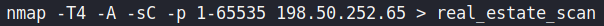

NMAP Initial Scan
Used
nmap
for an initial scan on the found IP adress of
dubairealestatecentre.com on all ports:
Flags used
:
-
Scan Speed (T4)
-
Aggressive (A)
-
Default nmap scripts (sC)
-
Stealth scan (sS)
> Directed output to file 'real_estate_nmap_scan':
Scan Summary:
PORT STATE SERVICE VERSION --------------------------------------------------------- 22/tcp open ssh OpenSSH 7.4 (protocol 2.0)
80/tcp open http Apache httpd
Device Type: WAP (Wireless Access Point)
OS CPE:
Type: Hardware
Vendor: actiontec
Product: mi424wr-gen3i
OS Running: Linux,
Edition: linux_kernel
OS Details: Actiontec MI424WR-GEN3I WAP